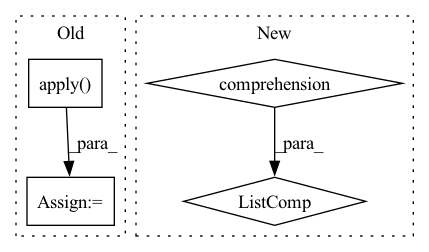

Pattern ID :12956
Before Change
// Find metrics that were reduced over the classes and replace the Class Name with None
is_reduced_metrics = check_result.value.groupby("Metric")["Class Name"].nunique() == 1
reduced_metrics = is_reduced_metrics[is_reduced_metrics].index.to_list()
check_result.value.loc[check_result.value.Metric.apply( lambda x: x in reduced_metrics) , "Class Name"] = None
// Dict keys are format metric_class
metric_class = check_result.value.loc[:, ["Metric", "Class Name"]].aggregate(lambda x:
"_".join(filter(None, x)), axis=1)
output_dict = dict(zip(metric_class, check_result.value["Value"]))
return output_dictAfter Change
def reduce_output(self, check_result: CheckResult) -> Dict[str, float]:
Return the values of the metrics for the dataset provided in a {metric: value} format.
result = {row["Metric"] + "_" + str(row["Class Name"]): row["Value"] for _, row in
check_result.value.iterrows()}
for key in [key for key in result.keys() if key.endswith("_<NA>")] :
result[key.replace("_<NA>", "")] = result.pop(key)
return result
In pattern: SUPERPATTERN
Frequency: 3
Non-data size: 4
Instances Fragment ID: 43623016
Project Name: deepchecks/deepchecks
Commit Name: 2672ac2b68e5e8f5371a25c308619dd6ab035325
Time: 2022-08-02
Author: 67195469+Nadav-Barak@users.noreply.github.com
File Name: deepchecks/vision/checks/model_evaluation/single_dataset_performance.py
M Class Name: SingleDatasetPerformance
N Class Name: SingleDatasetPerformance
M Method Name: reduce_output(2)
N Method Name: reduce_output(2)
M Parent Class: SingleDatasetCheck,ReduceMixin
N Parent Class: SingleDatasetCheck,ReduceMixin
M File Name: deepchecks/vision/checks/model_evaluation/single_dataset_performance.py
N File Name: deepchecks/vision/checks/model_evaluation/single_dataset_performance.py
M Start Line: 66
M End Line: 74
N Start Line: 65
N End Line: 69
Before Change
:return:
if rank:
ic = pred_label.groupby(level="datetime").apply(
lambda x: x["label"].rank(pct=True).corr(x["score"].rank(pct=True))
)
else:
ic = pred_label.groupby(level="datetime").apply(lambda x: x["label"].corr(x["score"]))
_index = ic.index.get_level_values(0).astype("str").str.replace("-", "").str.slice(0, 6)After Change
return x["label"].corr(x["score"], method=method)
ic_df = pd.concat(
[
pred_label.groupby(level="datetime").apply(partial(_corr_series, method=_methods_mapping[m])).rename(m)
for m in methods
] ,
axis=1,
)
_ic = ic_df.iloc(axis=1)[0] Fragment ID: 43623022
Project Name: microsoft/qlib
Commit Name: 2f5ce3dc01e6209520bd0d9bda52ed6d0188398e
Time: 2022-12-30
Author: qianyun210603@hotmail.com
File Name: qlib/contrib/report/analysis_model/analysis_model_performance.py
M Class Name: AnonimousClass
N Class Name: AnonimousClass
M Method Name: _pred_ic(2)
N Method Name: _pred_ic(2)
M Parent Class:
N Parent Class:
M File Name: qlib/contrib/report/analysis_model/analysis_model_performance.py
N File Name: qlib/contrib/report/analysis_model/analysis_model_performance.py
M Start Line: 113
M End Line: 161
N Start Line: 120
N End Line: 187
Before Change
contrasted_shape[
ShapeFileCols.FRAC_OF_CONFIRMED_BUILDINGS_AMONG_CANDIDATE
] = contrasted_shape.apply(
lambda x: get_frac_of_confirmed_building_points(x), axis=1
)
contrasted_shape[ShapeFileCols.FALSE_POSITIVE_COL] = contrasted_shape.apply(
lambda x: get_frac_of_MTS_false_positives(x), axis=1
)
df_out = shapes_gdf.join(contrasted_shape, on="shape_idx", how="left")After Change
comparison = compare_classification_with_predictions(shapes_gdf, las_gdf)
df_out = shapes_gdf.join(comparison, on="shape_idx", how="left")
keep = [item.value for item in ShapeFileCols] + ["geometry"]
df_out = df_out[keep]
output_shp = config.validation_module.operationnal_output_shapefile_name Fragment ID: 43623012
Project Name: ignf/lidar-deep-segmentation
Commit Name: 31f1b5494e15d044e44fdd7f00843d17eea4ff4f
Time: 2021-10-25
Author: charles.gaydon@gmail.com
File Name: semantic_val/validate.py
M Class Name: AnonimousClass
N Class Name: AnonimousClass
M Method Name: validate(1)
N Method Name: validate(1)
M Parent Class:
N Parent Class:
M File Name: semantic_val/validate.py
N File Name: semantic_val/validate.py
M Start Line: 54
M End Line: 67
N Start Line: 57
N End Line: 62